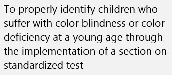
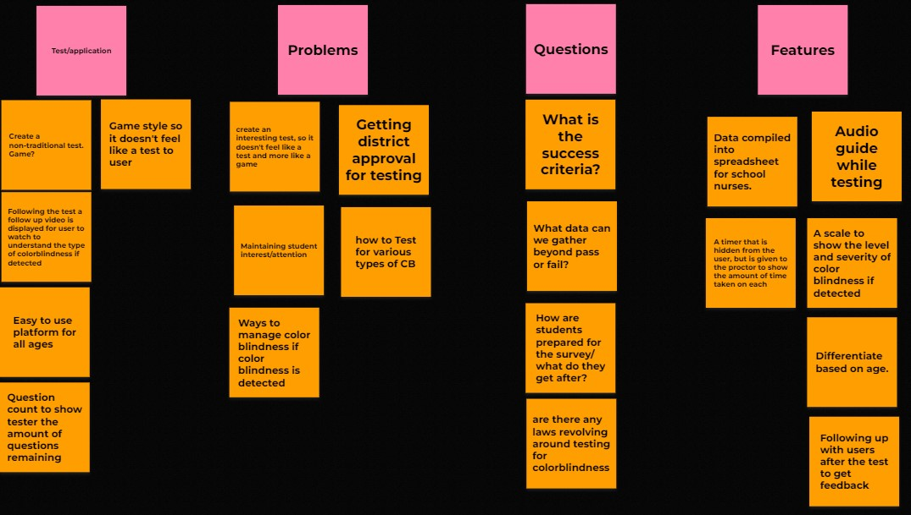

Identifying children who suffer from color blindness or color deficiency at a young age through the implementation screenings during early education.
The affinity diagram outlines the application we want to construct and the features it will have. It also outlines some problems that we will need to address and questions that will need to be answered.
